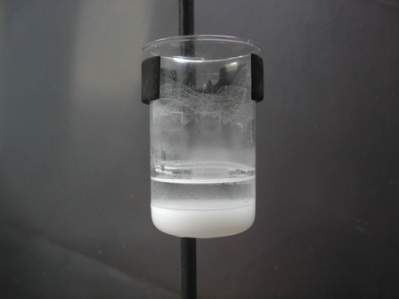
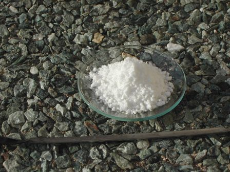

La complessità delle molecole chimico-farmaceutiche moderne spesso, anche se non sempre, è molto elevata; ci sono infatti molecole bellissime e strane, frutto di una ricerca costosa (ma che poi renderà, eccome se renderà!!!, se tutte le sperimentazioni andranno a buon fine).
Siccome a me piace guardare anche la formula delle molecole, mi chiedo talvolta per esempio perchè mai, in fondo ad una arzigogolata catena o in fianco di un anello benzenico situato chissà dove, abbiano piazzato un atomo di fluoro: perchè proprio quell'alogeno? E perchè proprio in quel posto?
I motivi è chiaro che ci sono, ma li lascio agli studenti da trenta e lode in CTF.
Agli albori della chimica farmaceutica le molecole di sintesi erano assai più semplici e già quelle erano un passo gigantesco per la medicina, da farci salti di gioia avendone avuto bisogno allora!
Pensiamo solo al banale cloroformio, semplice metano triclorurato, formula semplicissima CHCl3.
Chi si sognerebbe di operare oggi qualcuno col cloroformio, con tutti i suoi effetti indesiderati?
Ma facciamo finta per un attimo di essere un Pietro Maroncelli qualsiasi allo Spielberg di metà ottocento, davanti alla sega che dal vivo ti sta tagliando una gamba: quanti salti di gioia avrebbe fatto Pietro per avere una bottiglietta di "cattivissimo" CHCl3 a portata di naso?
Ben venga quindi la chimica in medicina... anzi, sia sempre più benedetta!
Fra i tanti vecchi farmaci del tempo dei nonni ce n'è uno con una molecola abbastanza semplice e non più usato perchè oggi ne abbiamo di migliori a disposizione.
Questa molecola, protagonista della storiella chimica di oggi è il cloretone, o 1,1,1-tricloro-2,metilpropanolo, scoperto da Willgerodt nel 1881.
In passato si usava come soprattutto come ipnotico ed anche come anestetico, o, in soluzione molto diluita, come germicida.
Da tempo mi ero ripromesso di fare la sintesi del cloretone, che è anche molto semplice.
Si trovano in bibliografia varie procedure, che si differenziano dall'usare come alcalinizzante idrossido di sodio o di potassio, dall'agire in presenza di acqua oppure no, e dall'usare un rapporto reagenti molto variabile.
Io ho preferito ripetere quella dell'amico Massimo, che mi dava più affidamento.
[Mi chiedo per inciso come mai certi bravissimi chimici sperimentali, attivi fino al giorno prima, di colpo scompaiano nel nulla. Ma dove sei andato a finire caro Massimo? Non avrai di punto in bianco buttato alle ortiche il tuo prezioso lab, spero!]
La difficoltà maggiore in questa sintesina è nell'avere a disposizione un bel po' di ghiaccio, perchè per un paio d'ore bisogna tenere l'ambiente di reazione verso lo zero termometrico.
Materiale occorrente:
- acetone CH3-CO-CH3
- cloroformio CHCl3
- idrossido di potassio KOH
- vetreria opportuna e ghiaccio
- In un beuta da 100 ml circondata da una miscela di ghiaccio e sale introdurre 45 ml di acetone e 5 ml di cloroformio e quando la temperatura è scesa sotto lo zero aggiungere un grammo di KOH macinato finemente al momento (è estremamente igroscopico, fare in fretta).
Porre il tutto su un agitatore magnetico e lasciar reagire per un paio d'ore, aggiungendo ogni tanto del ghiaccio al bisogno.
La soluzione si intorbida anche per la formazione di cloruro di potassio e assume aspetto lattiginoso, che poi si lascia decantare.

Alla fine filtrare ed evaporare a bagno maria il filtrato, per eliminare l'acetone in eccesso, fino ad ottenere un liquido bianco oleoso.
Aggiungere 50 ml di acqua ghiacciata (il cloretone è abbastanza solubile in acqua calda, poco in quella molto fredda) e filtrare rapidamente alla pompa; lavare con pochi ml di acqua gelida, aspirando il più possibile.
Seccare all'aria, tenendo presente che il cloretone sublima con facilità.

Per le sue caratteristiche e per l'odore, quasi identico, l'1,1,1-tricloro-2-metilpropanolo sembra proprio parente della canfora, anche se la molecola è completamente diversa.
Ho ottenuto 5,5 g di prodotto, bianco microcristallino, con resa del 50% sul cloroformio.
E adesso, da bravo ipnotico, fila subito a dormire nella tua bottiglietta!
2 commenti